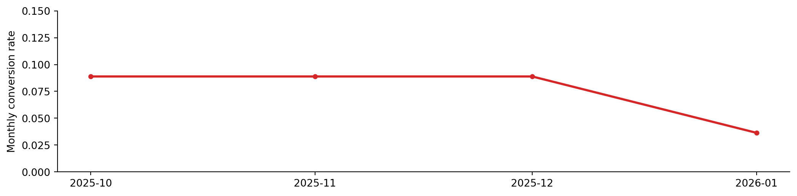
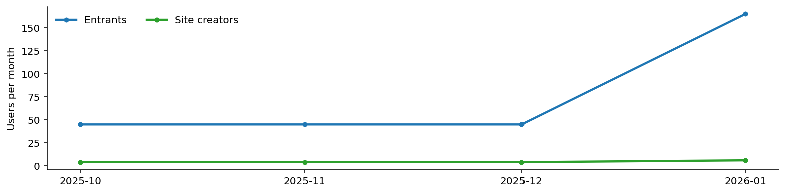

הסיפור (Context)
דמיינו מוצר consumer website-builder שמאפשר לאנשים לבנות אתר לעצמם. יוזר מגיע, נרשם, ונכנס לזרימה של יצירת אתר. חלק מהיוזרים מסיימים את הזרימה ויוצרים אתר בפועל — זה ה-conversion המרכזי שלנו.
הדאטה
קובץ הדאטה: user_events.csv (שורה אחת לכל משתמש/ביקור).
עמודות:
user_id: מזהה משתמש (int)visit_date: תאריך כניסה לפאנל (date)created_site_date: תאריך יצירת אתר (date, יכול להיות NULL)source:organic/email/paid_search/socialdevice:desktop/mobile/tabletcountry: קוד מדינה
נסו בעצמכם (SQLite אונליין)
החלון למטה משתמש ב-SQLite, אבל המשימות מוגדרות כ-PostgreSQL/BigQuery. זה בסדר—כאן המטרה היא לחקור את הנתונים.
-- Quick peek:
SELECT *
FROM user_events
LIMIT 10;שאלות
שאלה 1 — SQL (a + b)
1.a — חישוב מקור כניסה
עבור כל חודש, זהו את התאריך הראשון שבו עברנו 20 משתמשים מצטברים שיצרו אתר באותו חודשעבור כל חודש, החזירו את ה-source עם הכי הרבה הרשמות ואת האחוז היחסי של אותם נרשמים מכלל הנרשמים באותו חודש.
1.b — הגדרת המרה
הגדירו וחישבו שיעור המרה חודשי (Monthly conversion rate).
שאלה 2 — ירידה בשיעור ההמרה (ניתוח + ויזואליזציה)
2.a — מבט על שיעור ההמרה
מוצג לכם גרף חודשי של שיעור ההמרה לאורך התקופה.
מה אתם רואים? איך הייתם מנתחים/ות את הירידה בחודש האחרון?
מאיפה הירידה מגיעה?
מוצג לכם גרף חודשי שמפרק את ההמרה ל:
- נרשמו/נכנסו לפאנל (Signups/entrants)
- יצרו אתר
מה הבעיה בהמרה? מה הייתם מנסים כדי לשפר?

שאלה 3 — Product sense
ה-PM מגיע אליכם עם רעיון מהפכני לאתר: “נאפשר למשתמש לכתוב תיאור קצר (פרומפט), והמערכת תייצר אתר ראשוני אוטומטית, במקום (או לפני) תהליך ה-Drag-and-drop הקיים. תעזרו לו להעריך את הרעיון והציעו דרך לבחון את זה.